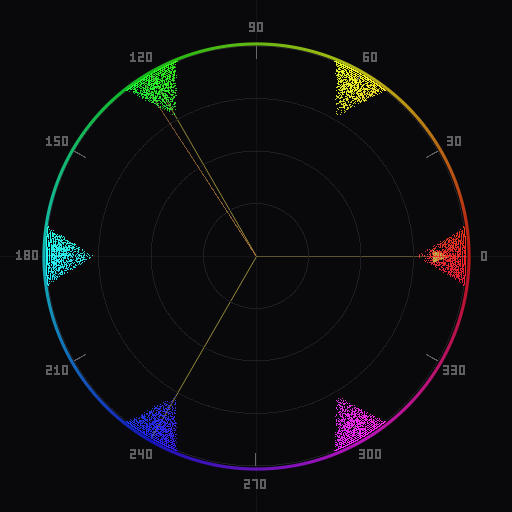

Learn
Photography Guides
Practical guides on using a vectorscope for color analysis, grading, and correction in photography.
Color Theory

What Is a Vectorscope?
What the circular plot means and why photographers should use one.

How to Read a Vectorscope
Step-by-step guide to interpreting hue, saturation, and color distribution.

Color Harmony in Photography
Complementary, triadic, and analogous schemes explained with vectorscope examples.
Workflow


Chromascope

Chromascope in Lightroom Classic
Get started with the Lightroom Classic vectorscope plugin in five minutes.

Chromascope in Photoshop
Get started with the Photoshop UXP vectorscope panel in five minutes.

Scatter vs Bloom
Which display mode to use and what each one reveals about your image.

Free Vectorscope Tools
An honest comparison of free vectorscope options for photographers.